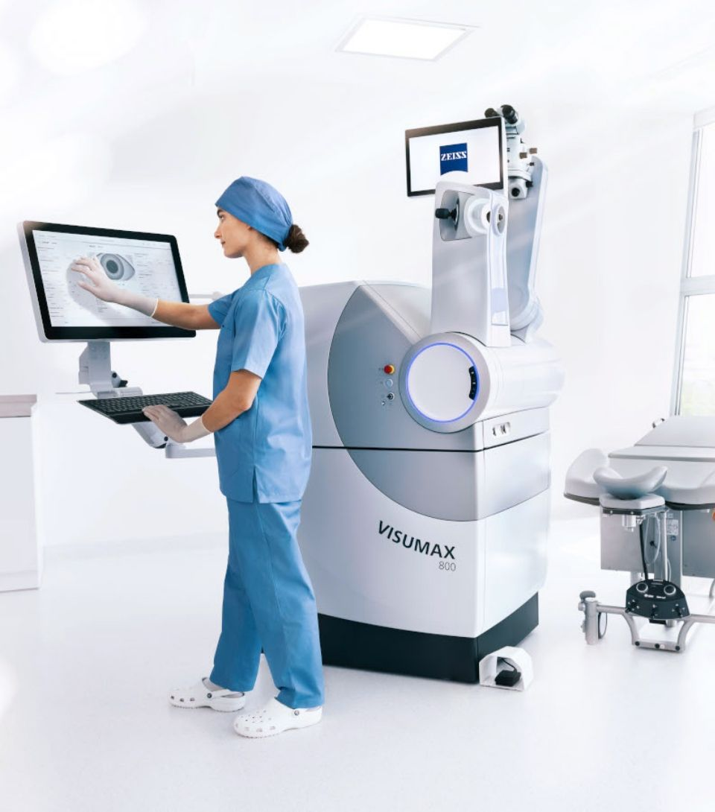

Could you wake up and see clearly, without glasses or contacts?
Find out in a free 15-minute call with the EyeHub team. No trip to the clinic, no eye drops, no pressure. If you are not suitable, we will tell you straight.
Five ways to get there. The assessment tells you which, if any.
EyeHub is home to Queensland's first ZEISS VisuMax 800 and MEL 90 laser suite, plus two lens procedures. Dr Moorthy matches the procedure to your eyes. Suitability is confirmed in clinic, with full scans.
Tap what sounds like you to see what is often considered
Currently only at EyeHub in QLD
SMILE PRO®
ZEISS VisuMax 800 · keyhole, flap-free laser
Often suitsactive, short-sighted eyes
Keyhole laser correction for short-sightedness and astigmatism. A small incision and no corneal flap, which is why it is often considered by people who surf, swim or play sport.
No corneal flap, just a keyhole incision a few millimetres wide
Currently only available in Queensland at EyeHub
Short-sight
Astigmatism
Currently only at EyeHub in QLD
PRESBYOND®
ZEISS MEL 90 · Laser Blended Vision
Often suitsover-45s with reading glasses
For the years when reading glasses start following you around. One eye is set for distance, the other for near, and your brain blends the two.
Designed to reduce reliance on reading glasses
Currently only available in Queensland at EyeHub
Reading vision
Age 45+
LASIK
ZEISS VisuMax 800 + MEL 90
Often suitsa wide prescription range
The well-established laser procedure, performed with two ZEISS lasers: one creates a thin, blade-free flap, the other reshapes the cornea beneath it.
Short-sight
Long-sight
Astigmatism
ICL
Implantable Contact Lens
An optionwhen laser is not suitable
A tiny lens placed inside the eye, in front of your own lens. Nothing is removed, and it can usually be taken out later if needed.
Higher prescriptions
Thinner corneas
RLE
Refractive Lens Exchange
Often suitspeople 55 and over
Your eye's natural lens is replaced with a premium artificial lens chosen for your measurements and goals, using the same established approach as modern cataract surgery.
Reading vision
Long or short-sight
Age 55+
Every price includes your assessments and 12 months of aftercare.
Queensland's first ZEISS VisuMax 800 and MEL 90 laser suite.
EyeHub was the first clinic in Queensland to put the ZEISS VisuMax 800 and MEL 90 together in one laser suite. Right now it is the only clinic in the state offering both SMILE PRO® and PRESBYOND®.
Queensland's first
The ZEISS VisuMax 800 & MEL 90 laser suite. Current-generation ZEISS technology, here on the coast.
Both, in one clinic
Currently the only Queensland clinic offering SMILE PRO® and PRESBYOND®, so the procedure is matched to your eyes and your age.
Your surgeon, by name
Dr Sonia Moorthy: consultant ophthalmologist, RANZCO examiner, fellowships in Singapore and London. You will know who is treating you.
12 months of aftercare
Pre and post-op assessments and a full year of aftercare, in every price.
Published prices, nothing hidden
You will know the total before you set foot in the clinic.
Finance available
MediPay and Afterpay payment plans, subject to their approval and terms.

1stin Queensland

ZEISS VisuMax 800 + MEL 90Femtosecond & excimer laser suite
How it works
Here's what happens next.
1
Today · 1 minute
Pick a time
Choose a 15-minute slot on a Monday, Wednesday or Friday, and leave your name, mobile and email. That is all.
2
Online · 15 minutes
We call you
A phone or video call with the EyeHub team, from wherever you are. No eye drops, no waiting room.
3
At the end
You get a straight answer
Likely suitable or not, which procedure may suit, and what it costs. Then the decision is yours. No pressure.
If you are likely to be suitable, the next step is an in-clinic consultation with full scans. That is where suitability is confirmed.
The cost of waiting
What are glasses and contacts really costing you?
Frames, lenses, contacts, solution, prescription sunnies, the optometrist every couple of years. It adds up quietly and it never stops. Slide to roughly what you spend a year.
$900a year on glasses and contacts
$200$1,000$2,000$3,000
Based only on the figure you enter. Not a savings estimate, and not a sign that you are suitable. Reading glasses may still be needed with age.
Over the next 10 years$9,000and you still own nothing but a drawer of old frames
Over the next 20 years$18,000before price rises, and before the pairs you lose
Laser or lens surgery at EyeHubOne published price.Assessments · the procedure · 12 months of aftercare · finance availableSee transparent pricing ↓
Patient stories
What people say about the EyeHub experience.
Reviewed by patients on Google, Doctify and Birdeye
★★★★★
I booked the online assessment on a Sunday night from the couch. Had a call from the team first thing Monday. The easiest medical thing I've ever organised.
DanBuderim · Google review★★★★★
No pressure, no sales talk. They answered every question I had, including the awkward ones about cost, and told me plainly what my options were.
MelNoosa Heads · Doctify review★★★★★
The team were warm, unhurried and honest. Every question was answered and I never felt processed.
PriyaPeregian Beach · Google review★★★★★
I'd put it off for ten years because I assumed I'd be treated like a number. The opposite. Everything was explained, nothing was rushed.
ChrisMaroochydore · Birdeye review
Sample reviews shown for design purposes, replaced with EyeHub's verified reviews before launch. Comments reflect individual experiences of care, not clinical outcomes.
Patient video storyEyeHub's patient video plays here.
Transparent pricing
What it costs, in full.
We publish our prices because you would want to know. Laser prices cover both eyes: your assessments, the procedure and 12 months of aftercare. Lens procedures are priced per eye.
Pre & post-op assessments · 12 months aftercare · enhancement within 12 months if clinically needed
$7,500both eyes
LASIKZEISS VisuMax 800 + MEL 90
Pre & post-op assessments · 12 months aftercare · enhancement within 12 months if clinically needed
$7,500both eyes
PRESBYOND®ZEISS MEL 90 · Laser Blended Vision
Pre & post-op assessments · 12 months aftercare · enhancement within 12 months if clinically needed
$8,800both eyes
ICLImplantable Contact Lens
Pre & post-op assessments · 12 months aftercare · hospital & anaesthetic fees · single enhancement if clinically needed
$7,000per eye
RLERefractive Lens Exchange
Pre-op assessment · premium intraocular lens · surgery with Dr Moorthy · 12 months post-op care. Hospital and anaesthetic fees are additional.
$3,500per eye
The online suitability assessment is free. If you go on to an in-clinic surgical consultation, there is a $100 deposit, and it comes off your procedure price if you proceed. Laser vision correction is elective, so there is no Medicare rebate. Some private health extras may contribute. Finance is available through MediPay or Afterpay, subject to their approval, terms and fees.
Not sure which one you would need? That is the first thing the free online assessment answers.
Dr Sonia MoorthyOphthalmologist · Founder, EyeHub
Your surgeon
Meet Dr Sonia Moorthy.
Dr Moorthy is a consultant ophthalmologist and the founder of EyeHub, which she opened on the Sunshine Coast in 2022. She studied medicine in Scotland and trained at Sydney Eye Hospital, then completed fellowships in Singapore and London and further training in laser vision surgery in Spain, India and the UK. She is a RANZCO examiner and committee member, and her clinic is home to Queensland's first ZEISS VisuMax 800 and MEL 90 laser suite.
Consultant OphthalmologistRANZCO ExaminerFellowships · Singapore & LondonRefractive training · Spain, India, UKFounder, EyeHub · 2022
"Not everyone is a candidate, and you deserve to know early. Fifteen free minutes, a straight answer, and no pressure either way."
Dr Sonia Moorthy, Ophthalmologist & Founder, EyeHub
Laser eye surgery on the Sunshine Coast
Laser vision correction in Buderim, for the Sunshine Coast and Noosa.
EyeHub Laser Vision Specialists is an ophthalmologist-led clinic in Buderim on the Sunshine Coast, treating patients from Noosa, Maroochydore, Mooloolaba, Caloundra, Nambour, Gympie and the hinterland. It is home to Queensland's first ZEISS VisuMax 800 and MEL 90 laser suite, and is currently the only clinic in the state offering both SMILE PRO® and PRESBYOND®.
Laser eye surgery options include SMILE PRO® keyhole laser vision correction, LASIK, and PRESBYOND® Laser Blended Vision for reading glasses, alongside Implantable Contact Lenses (ICL) and Refractive Lens Exchange (RLE) for eyes that are not suited to laser. Every procedure is performed by Dr Sonia Moorthy, consultant ophthalmologist and RANZCO examiner, with pre-operative assessments and 12 months of aftercare included. The first step is a free 15-minute online suitability assessment, from home.
Anaesthetic drops numb the eye, so most people describe pressure rather than pain, and the laser step is over in minutes. Some grittiness, watering or light sensitivity for a day or two afterwards is common. We will explain exactly how it is managed for your procedure.
Stability matters more than age. Laser candidates are usually 18 to 60 with a prescription that's been stable for 12 months or more. Over 45 and reaching for readers? PRESBYOND® may be an option. From about 55, Refractive Lens Exchange may suit better. The assessment sorts this out.
Modern ZEISS lasers treat a broader range than older technology, and if laser is not right, ICL is designed for higher prescriptions and thinner corneas. That is exactly what the assessment checks.
Like any surgery, laser and lens procedures carry risks. For laser these include dry eye, glare or halos at night, infection, delayed healing and under or over-correction. Dr Moorthy goes through your personal risk profile at your in-clinic consultation, and nothing goes ahead until every question you have is answered.
It varies by procedure and by person. Many people return to desk work within days, subject to Dr Moorthy's advice, and vision keeps settling over three to six months. Water and contact sports need a longer break, which we will spell out for your procedure. Your 12 months of aftercare is included.
Every procedure has one published price (laser for both eyes, ICL and RLE per eye), covering your assessments, the procedure and 12 months of aftercare. For RLE, hospital and anaesthetic fees are additional. The full price list is just above. MediPay and Afterpay plans are available, subject to approval. There is no Medicare rebate; some private health extras may contribute.
Then we will tell you, plainly, and why. Sometimes a different procedure suits, such as ICL or Refractive Lens Exchange; sometimes the honest answer is that glasses or contacts remain the right choice for now. Either way, you have spent 15 minutes, not a deposit.
If you are likely to be a candidate, we will offer an in-clinic surgical consultation with Dr Moorthy, where full diagnostic scans confirm suitability. That consultation carries a small deposit, credited to your procedure if you go ahead. You decide in your own time. Nothing is booked without you.
Ready when you are
Fifteen minutes now, and you will know where you stand.
Free, from home, no obligation. If you are suitable, you will know your options and the cost. If you are not, you will know that too, and you have lost nothing.
Free · 15 minutes · online from anywhere
Confirmed by the EyeHub team within one business day
Currently Queensland's only clinic offering both SMILE PRO® and PRESBYOND®
Book your free online assessment
Call 07 5220 8990 or email admin@eyehub.net.au with two times that suit, on a Monday, Wednesday or Friday. We confirm within one business day.